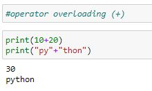
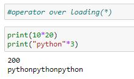
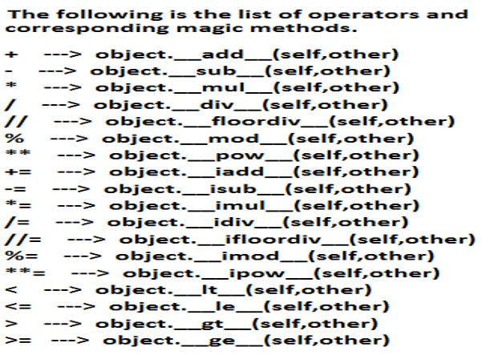
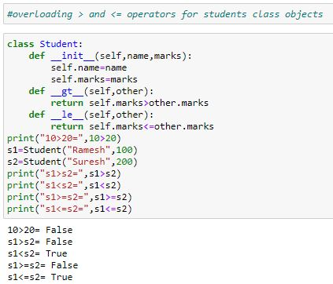
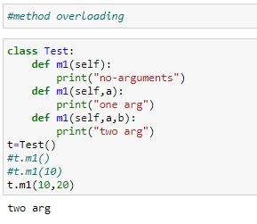
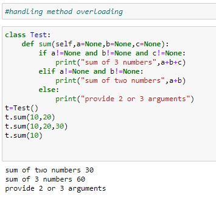
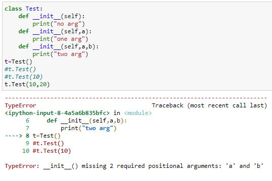

Polymorphism
Poly means many. Morphs means forms.Polymorphism means 'Many Forms'.
Example : + operator acts as concatenation and arithmetic addition
: * operator acts as multiplication and repetition operator
There are 3 types of overloading
1. Operator Overloading
2. Method Overloading
3. Constructor Overloading
1. Operator Overloading:
We can use the same operator for multiple purposes, which is nothing but operator overloading. Python supports operator overloading.
+ operator can be used for Arithmetic addition and String concatenation

* operator can be used for multiplication and string repetition purposes.



Method Overloading:
If 2 methods having same name but different type of arguments then those methods are said to be overloaded methods.
Eg: m1(int a)
m1(double d)
But in Python Method overloading is not possible. If we are trying to declare multiple methods with same name and different number of arguments then Python will always consider only last method.

How we can handle overloaded method requirements in Python:
Most of the times, if method with variable number of arguments required then we can handle with default arguments or with variable number of argument methods

3. Constructor Overloading:
Constructor overloading is not possible in Python. If we define multiple constructors then the last constructor will be considered
